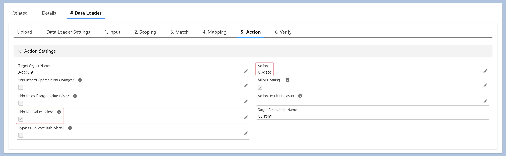
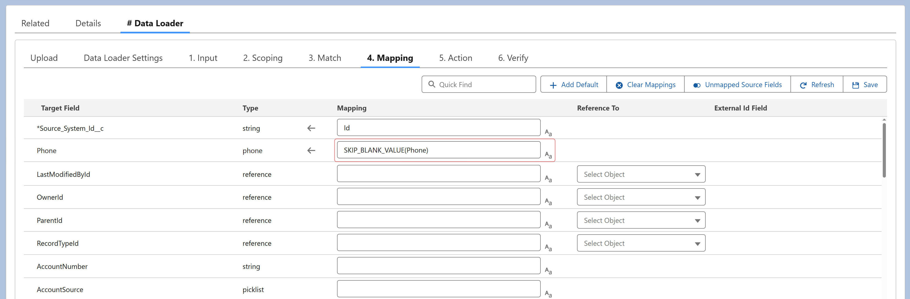

You have two options:
To skip all NULL fields, enable Skip Null Value Fields in the Action section.
To skip specific fields, use the
SKIP_BLANK_VALUE(value) function in the target field mapping.
This prevents assignment if the evaluated value is NULL or an
empty string.

